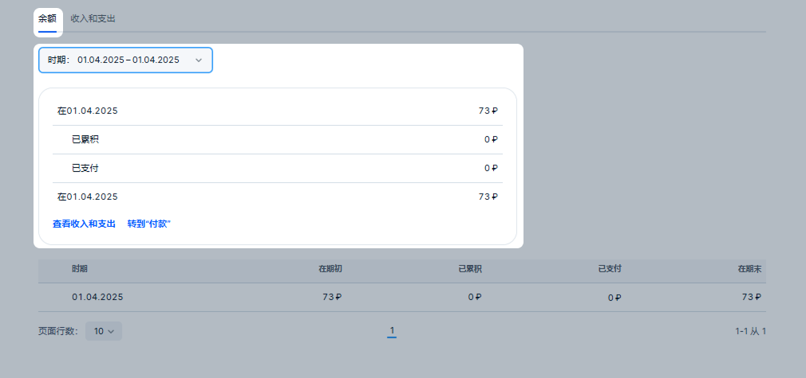
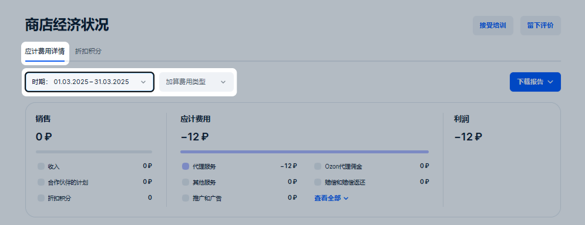
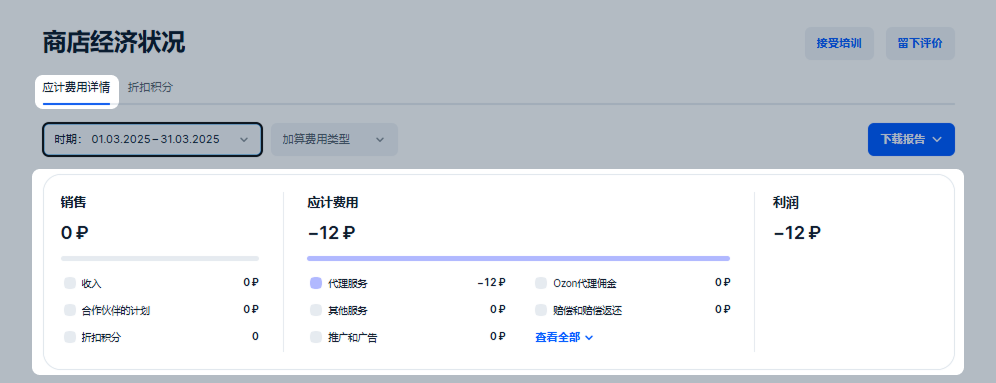
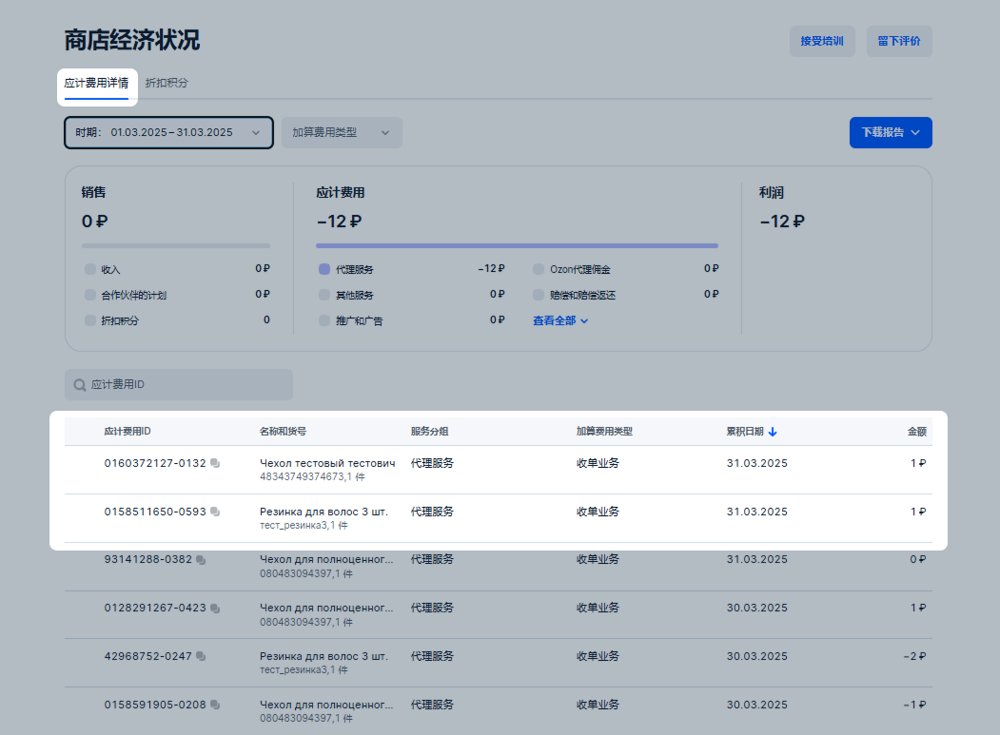

财务 部分显示的是您的收入和支出。
余额
我们会在网站个人中心的 “财务” → “余额” 部分或应用程序的 “首页” → “财务” → “余额” 部分显示：
“Internet Solutions”和“Ozon Technologies”的当前余额；
您的收入和支出；
“Internet Solutions”余额的变动历史。
余额 选项卡显示的是任何时间段内的余额更改历史记录，包括应计费用和付款。在筛选器下方的小插件中，您可以查看所选时段的汇总数据，而在表格中可以查看按天分类的详细信息。

在 收入和支出 选项卡中显示的是有关于所选时间段的应计费用汇总信息。
顶部小组件显示“Internet Solutions”和“Ozon Technologies”的当前余额，以及截至今日您账户中的资金总额。请展开“Internet Solutions”余额并将鼠标悬停在 上，查看当月的应计项目和付款信息：
期初——当月月初的余额；
应计——您当月的收入扣除所有支出后的金额；
已付款——您当月收到的所有付款的总额；
已预留——我们从您当前余额中预留的、用于未来计划付款和扣款的金额。
在“在此时期”模块中，我们显示销售、退货和应计项目的总金额。您可以在下方查看所有金额——我们已按“Internet Solutions”和“Ozon Technologies”的余额进行划分，并按类型分组。
只有在 余额 模块更新之后，才能按“销售”和“退货”分组查看明细。如果选择早于更新日期的时间范围，则只会显示这两类的汇总金额 — 不包含各自的销售额、折扣积分和合作伙伴忠诚度计划的明细。
欠款
欠款是指您应向Ozon和Ozon Technologies支付的金额。在个人中心中以带“-”的余额形式显示。它将在下列情况下产生：
您的收入比您所获得服务的价格以及退货费用低；
在之前的期间我们因失误而向您支付了过多的金额。
欠款产生后，我们会立即自动暂停您使用付费推广工具的权限：商品推广工具——“按点击付费”和“按订单付费”，以及媒体广告。
已创建的广告活动将变为非活跃状态。在推广工具权限恢复之前，您无法启动新的广告活动。
付费推广访问权限恢复
当您的当期周转额至少比广告支出高出5000卢布时，我们将为您恢复工具访问权限。您可以在 财务 → 余额 选项卡中查看您的周转额。如果您没有欠款，并且 期末余额 一行中的金额超过5000卢布，那么对工具的访问权限将自动在3天之内恢复。
在工具的访问权限恢复后，您的广告活动将处于非活跃状态，请手动将其重新启动。您可以在开启广告活动之前调整设置并避免再次欠款。
多个个人中心
在有欠款时，我们将考虑特定个人中心的余额以及您法人名下注册的所有个人中心的余额：
如果余额为正，但其中一个或多个个人中心有欠款，那么我们将仅为有欠款的个人中心暂停推广；
如果余额为负，那么我们将为所有个人中心暂停推广。
我们将在符合以下条件时为您恢复对工具的访问权限：
所有个人中心的余额为正数；
个别个人中心的欠款已消失——当期周转额比广告支出高出5000卢布。
报告列表
该模块暂时不可用。
商店经济状况
在 商店经济状况 部分，您可以查看关于应计费用和折扣的信息。
在 应计费用详情 选项卡上，您可以：
设置应计费用筛选器：
根据时间段——请选择从2022年1月1日到当前的任何日期，时间段不得超过31天；
根据类型——例如，根据收入或退货。我们按“Internet Solutions”和“Ozon Technologies”的余额划分应计项目——您可以查看哪些服务计入哪个余额。

在小插件中查看应计费用的汇总信息：
销售 — 包含销售额、合作伙伴忠诚度计划和折扣积分的明细：
“合作伙伴的计划”行显示 Ozon 银行返还给您的金额，用以补偿银行卡“绿价”成交价与您个人中心价格之间的差价。
“折扣积分”行显示因商品参与其他促销活动而返还到您账户的积分金额。此行还会计入作为第二部分补偿的合作伙伴银行卡折扣积分。
上述明细自 商店经济状况 模块更新后开始显示。若选择早期日期，则仅显示销售总额，不分组别明细。
应计费用 ——按种类分组。针对服务分组显示的是扣除退货后销售额中的支出百分比。如果在一个时期内出现带有“+”和“−”符号的应计费用，那么小插件中将出现两条刻度线——一条是服务分组在负应计费用中的份额，另一条是服务分组在正应计费用中的份额。
如要查看支出百分比，请将光标悬浮在小插件中的彩色刻度上。利润 ——计算为销售额和应计费用之间的差额。
如果所选时间段的初期有欠款，那么它将以单独行显示——我们将其计入利润金额中。
在“应计费用”小插件中可能会有两条线：一条为负应计费用，如服务费；另一条为正应计费用，如赔偿金。如果两条都显示，那么利润按以下公式计算：
销售+带有“-”的负应计费用+正应计费用
示例
如果在此期间内您销售了100 000卢布的商品，服务应计费用为-20000卢布，而赔偿金为5000卢布，那么我们根据以下公式计算利润： 100 000 + (−20 000) + 5 000 = 85 000 ₽
在表格中检查应计费用详情。
如要找到特定的应计费用，请在搜索栏中输入其标识符的完整数值。例如，货件编号、货位标识符或订阅期限。
如果货件包含多个商品，可以展开该行以查看每个商品的详细信息。如果订单中有多个带有同一货号的商品，那么它们将显示为一个总额。
部分应计项目已分组显示，例如：销售收入、物流费用、货件处理费等。
如果可以查看应计费用的附加信息，那么金额将标记为 。请点击标签以获取更多信息。

付款
在 付款 选项卡中您可以看到已到账或近期即将到账的付款账单。可能的状态有：
正在生成 ——Ozon正在生成付款账单。
等待付款 ——账单已准备就绪，但银行尚未确认交易、拒绝付款或付款日期还没到。
已支付 ——付款已到达您的账户。
如果资金已到达您的账户，那么付款状态可能为 等待付款 。状态将在银行确认转账时更改。
文件
在 文件 选项卡上您可以看到有关您在Ozon上运行的报告文件：
“Internet Solutions”的完工单;
“Ozon Technologies”服务的完工单；
商品销售报告，其中包括重新提供服务报告；
分析报告；
商品赔偿报告；
欠款支付报告；
“Internet Solutions”和“Ozon Technologies”的对账单；
扣款通知和扣款报告；
其他文件。